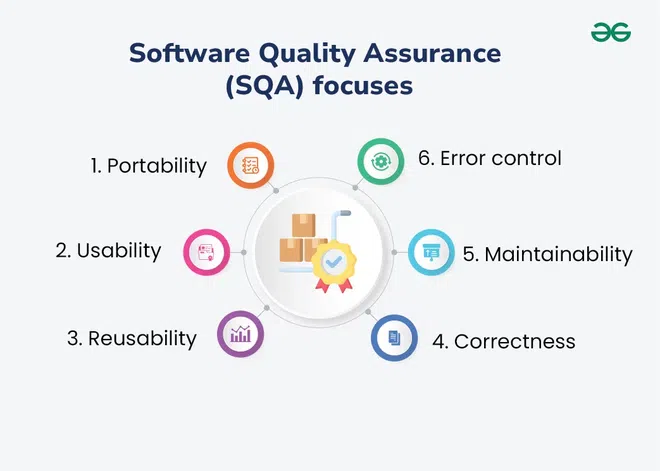

8.2 Software Quality Assurance
Software Quality Assurance (SQA) is an umbrella activity that runs in parallel with the entire Software Development Life Cycle (SDLC). Its purpose is to ensure that software engineering processes, methods, and standards are applied correctly so that the resulting product meets defined quality goals. SQA is not the same as testing — it oversees the entire quality system, including processes, reviews, standards, and defect prevention.
Definition and scope
- SQA is a process that ensures software products meet quality standards and stated requirements throughout development and maintenance.
- Its primary objective is to prevent defects, improve overall product quality, and ensure customer satisfaction — not merely to count bugs at the end.
- SQA implements quality control and quality management activities across the entire lifecycle so that problems are caught before they reach the customer.
- It is a planned and systematic set of activities needed to provide adequate confidence that a software product conforms to established technical requirements and user needs.
- SQA operates as an umbrella activity — it spans every phase of the SDLC from requirements through maintenance, not just the testing phase.
- SQA runs parallel to development; the SQA group monitors process compliance while the engineering team builds the product.
- SQA provides management with objective evidence that quality objectives are being met and that deviations are identified and corrected promptly.
How software quality is defined for SQA
- In SQA, software quality means conformance to explicitly stated functional and performance requirements in the SRS.
- It also means conformance to documented development standards — coding rules, design conventions, and review procedures agreed for the project.
- Quality includes implicit characteristics expected of all professionally developed software, such as maintainability, reliability, and usability, even when not written line-by-line in the SRS.
- A product can meet every written requirement and still fail SQA if it is unmaintainable, insecure, or unusable — quality is broader than functional correctness alone.
Two groups responsible for SQA
- Software engineers perform the technical quality work — applying sound methods, conducting formal technical reviews, and executing well-planned testing on a daily basis.
- The SQA group has organisational responsibility for quality assurance planning, oversight, record keeping, analysis, and reporting to management.
- Engineers address quality at the work-product level; the SQA group ensures that the overall process and standards are being followed consistently.
- The SQA group typically reports independently of the development manager so that audit findings are objective and not suppressed to meet schedule pressure.
Elements of SQA
SQA is built from several interlocking elements that together form a complete quality system:
- Standards and procedures: Adoption of IEEE, ISO, and organisational software engineering standards (such as IEEE 730 for SQA plans, ISO 9001 for QMS, and CMMI for process maturity) that define how work should be performed.
- Reviews and audits: Technical reviews are QC activities performed by engineers to uncover errors; SQA audits are performed by SQA personnel to verify that quality guidelines and process rules are being followed.
- Testing oversight: Testing is a QC function whose primary goal is to find errors — SQA ensures that testing is properly planned, resourced, multi-level, and efficiently conducted rather than ad hoc.
- Defect collection and analysis: SQA collects and analyses error and defect data to understand how defects are introduced and which engineering activities best eliminate them.
- Change management: SQA ensures that adequate change management practices are instituted so that every modification is reviewed, approved, and tested before release.
- Education and training: Every software organisation wants to improve its practices — the SQA group leads process improvement and sponsors training programmes for engineers, managers, and stakeholders.
- Security management: SQA verifies that appropriate security processes and technologies are used so that vulnerabilities are addressed throughout the lifecycle.
- Safety: For safety-critical systems, SQA assesses the impact of software failure and initiates steps required to reduce risk to acceptable levels.
- Risk management: SQA ensures that risk management activities are properly conducted and that contingency plans exist for identified quality and schedule risks.
SQA techniques (from process to product)
- Code reviews and inspections: Structured examination of source code and design documents to find defects before compilation or execution.
- Audits: Independent checks by SQA staff that procedures, standards, and the SQA plan itself are being followed on the project.
- Testing: Dynamic execution of the software at unit, integration, system, and acceptance levels — overseen by SQA to ensure coverage and traceability.
- Metrics: Quantitative measures such as defect density, code coverage, review effectiveness, and schedule variance used to evaluate whether quality goals are being met.
- Documentation control: Proper documentation of requirements, design, test cases, and review records for transparency and traceability during audits and maintenance.
- Continuous improvement: Monitoring processes and products to identify improvement opportunities and implementing corrective actions when trends show declining quality.
SQA focus areas

- Portability: The software can be transferred to different hardware or software environments with minimal modification.
- Usability: Users can learn and operate the system efficiently; interfaces meet human-factors requirements.
- Reusability: Components and modules are designed so they can be reused in future projects, reducing development cost and improving consistency.
- Correctness: The software performs its intended functions correctly and conforms to its specifications.
- Maintainability: The system can be modified to correct defects, improve performance, or adapt to a changed environment with acceptable effort.
- Reliability: The software performs consistently under normal use and recovers gracefully from errors — a core PDF quality attribute monitored by SQA.
- Efficiency: The system uses reasonable CPU, memory, and network resources while meeting performance requirements.
- Functionality: All required features are present and operate as specified in the SRS — the baseline attribute against which testing is traced.
- Error control: Defects are detected early, tracked systematically, and prevented from recurring through process improvement.
What SQA encompasses — seven core areas
SQA as a comprehensive quality system is built from seven interrelated areas:
- Quality management approach: A documented strategy for how quality will be achieved on the project, aligned with organisational policy.
- Effective software engineering technology: Use of proven methods, tools, and techniques (CASE tools, configuration management, review methods) that support quality production.
- Formal technical reviews: Structured reviews applied throughout the software process at requirements, design, code, and test stages.
- Multi-tiered testing strategy: A planned combination of unit, integration, system, and acceptance testing — not reliance on a single test pass at the end.
- Software documentation control: Controlling and tracking all project documents and the changes made to them so that every artefact remains consistent and auditable.
- Compliance with development standards: Ensuring the project follows applicable IEEE, ISO, and internal coding/design standards when they apply.
- Measurement and reporting mechanisms: Collecting quality metrics and reporting results to the project manager and senior management on a regular schedule.
Major SQA activities during a project
- SQA management plan: Prepare a plan for how SQA will be carried out throughout the project — which activities apply, what standards govern the work, and what skills the SQA team needs (see §8.4 SQA Plans).
- Set checkpoints: The SQA team defines evaluation checkpoints at key milestones and measures project performance against collected data at each checkpoint.
- Measure change impact: When a defect fix or requirement change is made, SQA tracks whether the fix re-introduces new errors and verifies compatibility with the whole system before sign-off.
- Multi-testing strategy: SQA does not rely on a single testing approach — multiple methods (reviews, static analysis, unit/integration/system/acceptance testing) are combined for broader coverage.
- Review software engineering activities: The SQA group identifies and documents processes, then verifies the correctness of software products against those processes.
- Formal technical reviews of work products: SQA selects key deliverables (SRS, design, code modules) for formal review, documents deviations, and verifies that corrections are applied.
- Formalise deviation handling: All deviations from standards or the project plan are tracked and handled according to a documented procedure until resolved.
- Maintain records and reports: Test cases, defect logs, change requests, and review minutes are comprehensively documented and shared with stakeholders.
- Manage good relations: SQA works constructively with developers and testers — poor relations between SQA and engineering teams directly harm project quality and schedule.
- Report non-compliance to senior management: Items that cannot be resolved at project level are escalated and tracked until closed.
FOR each SDLC phase (Requirements → Design → Code → Test → Deploy → Maintain)
Prepare / update SQA Plan for phase deliverables
Set quality checkpoints before phase exit
Review work products (SRS, SDD, code, test plans)
Verify process compliance against standards (IEEE, ISO, internal)
Conduct or oversee formal technical reviews
Track defects → analyse root causes → verify fixes
Measure impact of every approved change
Run multi-level testing (unit, integration, system, acceptance)
Collect metrics (defect density, coverage, review findings)
Document all records and report to project manager
IF non-compliance found THEN
Log deviation → assign correction → verify closure
IF unresolved THEN escalate to senior management
END IF
END FOR
Continuous improvement: feed metrics back into process refinementSQA group responsibilities (detailed)
- Prepare an SQA plan during project planning and have all interested parties review it; the plan governs both the SQA group and the engineering team's quality activities.
- Participate in selecting the software process — the SQA group reviews the chosen process description for conformance with organisational policy, internal standards, and external requirements.
- Review engineering activities to verify compliance with the defined software process; identify documents, track deviations, and confirm corrections.
- Audit designated work products — review selected deliverables, document deviations, verify fixes, and periodically report results to the project manager.
- Ensure deviations are documented and handled according to a written procedure, whether the deviation arises in the project plan, process, standards, or a technical work product.
- Record and report non-compliance to senior management and track non-compliance items until they are fully resolved.
Quality management frameworks used with SQA
- Most organisations base their SQA programme on one or more established quality management models — the three most widely used are ISO 9000, CMMI, and Six Sigma.
- ISO 9000 provides international guidelines for a Quality Management System (QMS) — see §8.6.
- CMMI / SEI-CMM assesses process maturity on five levels — see §8.7 and §3.10.
- Six Sigma uses statistical methods to reduce process variation and defects — see §8.8.
- McCall, Boehm, and ISO/IEC 9126 quality factor models define what to measure; SQA defines how to assure those factors are achieved — see §8.5 Quality Frameworks.
SQA vs software testing
| Aspect | Software Quality Assurance (SQA) | Software Testing |
|---|---|---|
| Scope | Entire SDLC — process, standards, reviews, audits, and testing oversight | Product verification — executing tests to find defects in the built software |
| Focus | Process quality and prevention of defects | Product quality and detection of defects |
| Timing | Continuous from project start to delivery | Concentrated during implementation and test phases (with test planning earlier) |
| Goal | Ensure the right process is followed so quality is built in | Ensure the product meets specified requirements |
| Who performs it | SQA group + all engineers following defined processes | Test engineers / QA testers (often a dedicated test team) |
| Output | Audit reports, compliance records, process metrics, SQA plan | Test cases, defect reports, test coverage reports |
- Testing verifies that the product works; SQA verifies that the process used to build the product is sound and that testing itself is adequate.
- SQA is proactive and process-focused; testing is largely reactive and product-focused, though test planning is proactive.
- An organisation can test thoroughly but still produce poor-quality software if its underlying processes are chaotic — SQA addresses that upstream gap.
- SQA groups typically report to senior management independently of the development team to maintain objectivity in audits and non-compliance reporting.
- High-quality commercial software increases market share and customer trust — SQA is the organisational mechanism that makes quality repeatable rather than accidental.
Q: Define Software Quality Assurance. List its elements, focus areas, and major activities. How does SQA differ from software testing?
Model answer points:
- SQA = umbrella activity parallel to SDLC; objective = prevent defects, improve quality, ensure customer satisfaction.
- Two groups: software engineers (technical QA/QC work) + SQA group (planning, oversight, records, reporting).
- Elements: standards (IEEE/ISO/CMMI), reviews/audits, testing oversight, defect analysis, change management, education, security, safety, risk.
- Techniques: code reviews, inspections, audits, testing, metrics (defect density, coverage), documentation, continuous improvement.
- Seven encompassed areas: quality management approach, SE technology, formal reviews, multi-tiered testing, doc control, standards compliance, measurement/reporting.
- Focus attributes: portability, usability, reusability, correctness, maintainability, reliability, efficiency, functionality, error control.
- Major activities: SQA plan, checkpoints, change impact, multi-testing, deviation handling, records, relations, escalation to management.
- Frameworks: ISO 9000, CMMI, Six Sigma (+ McCall/Boehm/9126 for quality factors).
- SQA = process assurance across SDLC; testing = product verification; SQA oversees testing as one component.